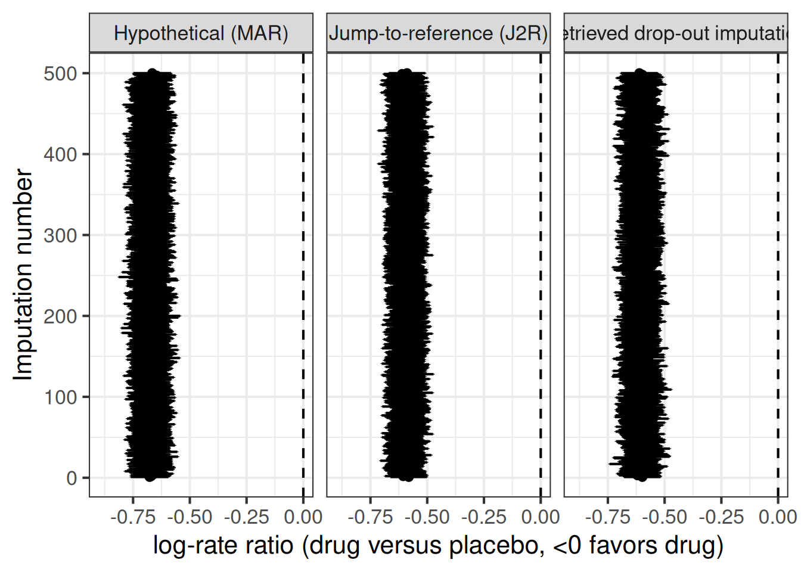
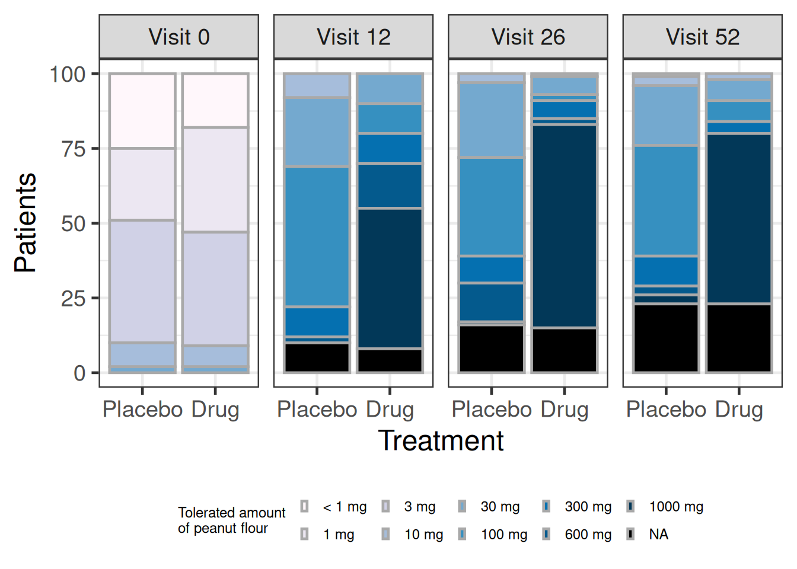
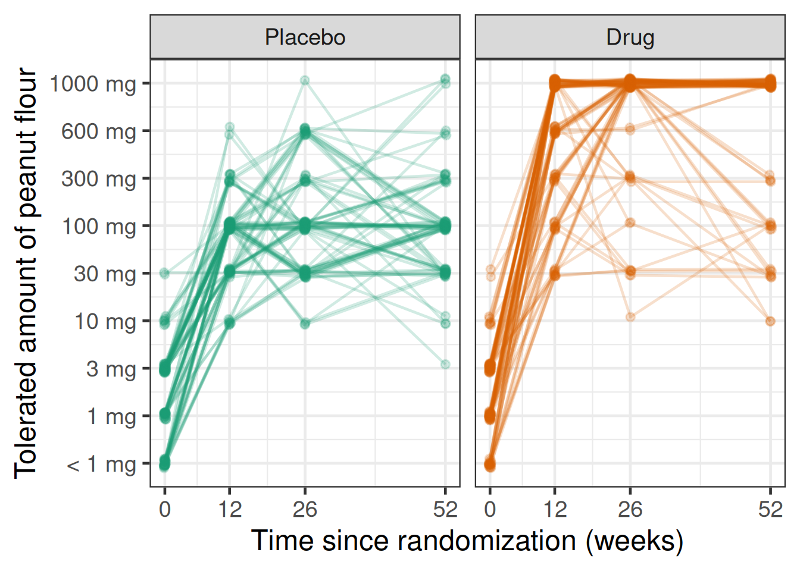

library(tidyverse)
library(brms)
library(ggrepel)
library(MASS)
library(emmeans)
here::i_am("src/02e_multiple_imputation.qmd")
# instruct brms to use cmdstanr as backend and cache all Stan binaries
options(brms.backend="cmdstanr", cmdstanr_write_stan_file_dir=here::here("_brms-cache"))
# create cache directory if not yet available
dir.create(here::here("_brms-cache"), FALSE)
set.seed(7894562)
# we also disable normalization of the likelihood which accelerates Poisson models used
options(brms.normalize=FALSE)13 Multiple imputation
13.1 Background
13.1.1 Why multiple imputation?
In clinical trials, some data we would like to observed will inevitably be missing, or the data that we observe will not be of interest for our estimand (the quantity we really want to estimate with our clinical trial) due to some intercurrent event (https://database.ich.org/sites/default/files/E9-R1_Step4_Guideline_2019_1203.pdf). A common approach to deal with this situation is to perform some form of imputation for such values. We do this, because there is no realistic scenario under which an analysis of only the observed data (“complete case analysis”) targets a meaningful estimand in a valid way.
When would a complete case analysis ever be appropriate? One scenario would be for a hypothetical “as-if-patients-had-been-able-to-complete-treatment” estimand, if we assume that patients stopping treatment or stopping trial participation happens completely at random and has nothing to do with patient characteristics and previous (efficacy and safety) outcomes for the patients. However, this is obviously rather implausible and even if it were the case, a pharmaceutical company would be hard pressed to convince the scientific community and regulatory authorities that it is so.
At least until about 2010, people would often impute a single value to replace any data that were missing or not of interest. One popular single value imputation approach was “last-observation-carried-forward” (LOCF), in which the last observed value of interest was used to as a single imputation for any future values. However, even if the imputed value is the best possible guess for the missing value, imputing a single value completely ignores the uncertainty about the unobserved value. This is where multiple imputation (MI) comes in. MI imputes not one single value, but multiple ones. This set of values represent a sample from a distribution that describes the uncertainty about the unobserved values.
13.1.2 How do the inner workings of multiple imputation look like?
In general, an analysis using MI involves four steps (Rubin Donald B. “Multiple imputation for nonresponse in surveys”. Hoboken: Wiley; 2004.):
A (Bayesian) imputation model is fit to the data and \(M\) samples are drawn from the posterior distribution of the model parameters given the data.
This imputation model could be a single model for all treatment groups without treatment group by covariate interactions, a model that has completely separate parameters for each treatment group, or a model that assumes that (some) parameters in different treatment groups are similar.
In a single model for all treatment groups, we can also allow for treatment by covariate interactions.
Generally, we need to ensure that imputation model is “congenial” to the analysis model. I.e. it needs to be able to capture all the complexity present in the analysis model. It will often be more complex than the analysis model, for example it might be a model for the longitudinal data of patients over time when the analysis model is only for the final study visit, or it might separately model on- and off-treatment records for patients.
For each of the \(M\) posterior samples \(M=1,\ldots,M\) the missing data are simulated based on the sampled values from the posterior of the model parameters. What set of parameter values applies depends on the estimand of interest.
Under a treatment policy estimand implemented using a “jump-to-reference” (J2R) approach, we would impute missing values after treatment discontinuation in all treatment groups based on placebo group parameters.
Alternatively, we could target a treatment policy estimand by imputing missing values after treatment discontinuation in each treatment group based on parameters that describe what happens in that treatment group after treatment discontinuation (based on observed off-treatment data).
Under a hypothetical “as-if-patients-had-been-able-to-complete-treatment” estimand, we would impute missing values for patients based on the parameters of the treatment group they were assigned to.
We will often use have patient specific latent random effect(s) that are used to reflect the correlation of observation from the same patient. In both of the scenarios described above, we would use the sampled values of the random effect(s) for each patients to simulate missing values for the patient. It usually computationally convenient to use latent normal random effects.
Each of the \(M\) sets of partially directly observed and partially imputed data are analyzed separately. This is done using an analysis model that need not be identical to the imputation model.
The results of the \(M\) analyses are aggregated e.g. using Rubin’s rule (Rubin Donald B. “Multiple imputation for nonresponse in surveys”. Hoboken: Wiley; 2004.).
This all sounds pretty complicated, but it gets surprisingly easy with brms. Interestingly, brms let’s us specify some pretty complex imputation models for a wide range of situations that would otherwise require bespoke and error-prone code e.g. in Stan. We will illustrate that in the next sections.
13.1.3 How many imputations to use?
While older literature suggests as few as 3 to 5, or maybe 50 imputations, there is usually some further reduction in standard errors by using a larger number of observations such as 250. Additionally, it is desirable to make our results as independent of pure play of chance in our MCMC sampling (it is just akward when the interpretation of the results may change with the choice of a random number seed). Thus, in practice we would frequently use 1000 or even 2500 imputations, as long as the added runtime is not prohibitive.
13.2 Data
We will need the following R packages in this Section:
Let us consider some simulated data for a trial in chronic obstructive pulmonary disease (COPD). Patients are enrolled into this trial, if they had at least one COPD exacerbation requiring oral corticosteroids, antibiotics, emergency department visit or hospitalization, or leading to death. Patients are then randomized to receive a drug or placebo and followed for up to 1 year. However, some patients discontinue treatment before 1 year. Some proportion of these patients agrees to be followed until the end of the trial, while some proportion is lost to follow-up.
patients <- 2000 # Total number of patients randomized
multiple <- 10 # Multiple of patients randomized to be simulated before applying inclusion criteria
minmum_for_inclusion <- 1 # Mininum number of events in previous year for inclusion in trial
mean_rate <- 1 # Mean event rate in simulated population before applying inclusion criteria
kappa <- 1.5 # Dispersion parameter of simulated population
study_length <- 1 # Length of simulated study
discontinuation_rate <- 0.2 # Exponential rate at which patients discontinue treatment
loss_proportion <- 0.5 # Proportion of discontinued patients that is lost to follow-up
num_imputations <- 500 # number of imputations to use
set.seed(67588)
# Simulate true event rates for patient population that is screened
patient_rates <- rgamma(n=patients*multiple, shape=1/kappa, rate = 1/kappa)*mean_rate
# Draw random number of events in previous year before trial
previous_year <- rpois(n=patients*multiple, patient_rates)
# Apply inclusion criteria
patient_rates <- patient_rates[previous_year>=minmum_for_inclusion][1:patients]
previous_year <- previous_year[previous_year>=minmum_for_inclusion][1:patients]
# Simulate data for patients that met inclusion criteria
count_data <- tibble(patient=1:patients,
BASE = previous_year,
treatment = ifelse(patient<=patients/2, 0L, 1L),
discontinuation_time = rexp(n=patients, rate=discontinuation_rate),
lost_to_followup = rbinom(n=patients,size=1, prob=loss_proportion),
patient_follow_up = min(study_length, discontinuation_time),
#drop_out = (drop_out_time<study_length),
patient_rate = patient_rates[patient]) %>%
left_join(expand_grid(patient=1:patients,
period=factor(1L:3L, levels=1L:3L,
labels=c("On-treatment",
"Post-treatment",
"Lost-to-follow-up"))),
by = "patient", multiple = "all") %>%
mutate(follow_up = case_when(
period=="On-treatment" ~ pmin(discontinuation_time, study_length),
period=="Post-treatment" ~ (1-lost_to_followup) * pmax(study_length-discontinuation_time, 0),
period=="Lost-to-follow-up" ~ lost_to_followup * pmax(study_length-discontinuation_time, 0),
TRUE ~ 1.0),
events = ifelse(period=="Lost-to-follow-up", NA_integer_,
rpois(n=patients*3,
lambda=follow_up*patient_rate*0.5^(treatment*(period=="On-treatment")))),
patient = factor(patient, levels=1:patients),
treatment = factor(treatment, levels=0L:1L),
logBASE = log(BASE))
count_data %>%
group_by(treatment, period) %>%
summarize(Events=sum(events),
`Patient-years`=sum(follow_up),
`Event rate (/p-y)` = Events/`Patient-years`,
`Total events prev. year` = sum(BASE),
`Rate in previous year` = mean(BASE),
.groups="drop") %>%
knitr::kable(digits=2)| treatment | period | Events | Patient-years | Event rate (/p-y) | Total events prev. year | Rate in previous year |
|---|---|---|---|---|---|---|
| 0 | On-treatment | 1505 | 903.36 | 1.67 | 2182 | 2.18 |
| 0 | Post-treatment | 78 | 48.18 | 1.62 | 2182 | 2.18 |
| 0 | Lost-to-follow-up | NA | 48.47 | NA | 2182 | 2.18 |
| 1 | On-treatment | 753 | 898.05 | 0.84 | 2162 | 2.16 |
| 1 | Post-treatment | 72 | 50.63 | 1.42 | 2162 | 2.16 |
| 1 | Lost-to-follow-up | NA | 51.32 | NA | 2162 | 2.16 |
13.3 Model description
13.3.1 Negative binomial regression as a Poisson random effects model
Our example uses overdispersed count data that follows a negative binomial distribution. We will use the parameterization of the negative binomial distribution, which can be derived as a Poisson random effects model with independent and identically distributed (i.i.d.) random effects. These random effects follow a gamma distribution with shape parameter \(1/\kappa\) and a rate parameter \(1/\kappa\) \[\begin{equation*}
U_i \sim \text{Gamma}(1/\kappa, 1/\kappa),
\end{equation*}\] where \(\kappa>0\). The distribution of the \(Y_i\) for patient \(i=1,\ldots,N\) conditional on the random patient effect \(U_i=u_i\) and on the observed follow-up time \(T_i=t_i\) is \[\begin{equation}\label{eq:poissondist}
Y_i|(U_i=u_i \text{ and } T_i=t_i) \sim \text{Poisson}(\mu u_i t_i).
\end{equation}\] Note that as \(\kappa\) approaches zero the negative binomial distribution becomes increasingly similar to a Poisson distribution. The glm.nb in the MASS R package instead uses a parametrization in terms of \(\theta := 1/\kappa\).
Thus, a negative binomial regression model is a Poisson random effects model with a log-link function: \[\begin{equation}\label{eq:Poisson_re_model} \log E(Y_i|U_i=u_i \text{ and } T_i=t_i) = \log \mu + \log u_i + \log t_i \end{equation}\] or more generally: \[\begin{equation*} \log E(Y_i|U_i=u_i \text{ and } T_i=t_i) = \boldsymbol{x_i}\boldsymbol{\beta} + \log u_i + \log t_i. \end{equation*}\] \(\boldsymbol{x_i}\) is the covariate vector for subject \(i\) and \(\log t_i\) is an offset variable — i.e. a covariate with coefficient 1. In a clinical trial setting \(\boldsymbol{\beta}\) will usually consist of the coefficient for an intercept \(\beta_0\), coefficients \(\beta_k\) for each test treatment group \(k=1, \ldots, K\) — these are the log-rate-ratios for each test group compared to the control group — and the coefficients for other covariates. Other covariates might be e.g.@ the logarithm of number of events in some preceding time period.
13.3.2 Extension to multiple observed time periods per patient
We can extent this model to having multiple records per patient with potentially different follow-up and covariates in each time period, with all observations from the same patient being linked through/sharing the same random effect \(u_i\). E.g. for observation \(j\) of patient \(i\), we can use \[\begin{equation*} \log E(Y_{ij}|U_i=u_i \text{ and } T_{ij}=t_{ij}) = \boldsymbol{x_{ij}}\boldsymbol{\beta} + \log u_i + \log t_{ij}, \end{equation*}\]
Instead of gamma-distributed random effects \(\log U_i\), we will use normally distributed random effects \(\nu_i \sim N(0, \tau)\) in our imputation model. This is computationally an easier model to fit for brms. Additionally, we can approximate the distribution of a log-transformed gamma random variable quite well with a normal distribution.
13.3.3 An imputation framework for missing count data
We will look at different estimands for count data that have all been used in practice:
Hypothetical estimand (“as if all patients had stayed on treatment until the end of the trial”)
Approach #1: Maximum likelihood estimation using a negative binomial regression model for the on-treatment data (discarding any observed off-treatment data)
Approach #2: Explicit imputation of off-treatment or lost-to-follow-up time periods based on on-treatment data.
These two approaches should give almost identical results.
In the second approach we fit a Bayesian imputation model on the on-treatment data. Then we perform prediction with this model (=multiple imputation) setting the treatment covariate to the treatment assigned as randomization for the records that need imputation. We will impute hypothetical on-treatment data for both time periods that were unobserved, but also for any observed post-treatment time periods.
Treatment policy estimand (reflecting that after treatment discontinuations patients are off treatment):
Approach #1: Imputation from observed off-treatment data
Approach #2: Imputation based on the control (“reference”) group event rate (“jump-to-reference” or “J2R”)
In the first approach, we fit a Bayesian imputation model on the on-treatment and observed off-treatment data. We add a “type of time period” (on- or off-treatment) covariate, as well as its interaction with the assigned treatment group. This allows us to predict off-treatment records for all treatment groups based on the observed off-treatment data by setting the type of time period to “off-treatment” for the periods that we did not observe data for.
In the second approach, we fit a Bayesian imputation model on the on-treatment data and impute the unobserved off-treatment data based on the reference group distribution (i.e. we set the treatment covariate to the reference group before predicting the unobserved data for these time periods). We do not impute the observed off-treatment data and include it in the data for each patient before the analysis of each imputed dataset.
Arguably the first approach is the more logical, because it directly uses the available evidence on what happens after discontinuing treatment. However, there are some difficulties. Firstly, there is often very little observed post-treatment data so that there will be a lot of uncertainty about the post-discontinuation event rate. Secondly, it is very challenging to model to what extent the event rate may change the more time has passed post-treatment-discontinuation (e.g. is there a residual treatment effect that needs to “wash-out” over time?) and in practice this is usually ignored.
13.4 Implementation
13.4.1 Imputation from observed off-treatment data
First, let us conduct an imputation model based on the observed off-treatment data, in which we specify that event rates can be different on- and off-treatment for each treatment group. Using this model, we perform predictions for the missing post-treatment values (patients lost-to-follow-up).
We use family=poisson() here, because a Poisson model with a random patient effect on the intercept is approximately equivalent to a negative binomial regression model and this is a way of reflecting the correlation of multiple observation periods for a patient that is consistent with that. However, we could also make the imputation model more complex e.g. by allowing counts to be overdispersed within patient by using family=negbinomial(), or allowing for some interactions such as treatment:logBASE or period:logBASE.
# Fit imputation model
brmfit1 <- brm(formula = events | rate(follow_up) ~ 1 + (1|patient) + treatment + period + treatment:period + logBASE,
data=count_data %>%
filter(period %in% c("On-treatment", "Post-treatment") & follow_up>0),
family=poisson(),
refresh = 0, silent = 0)make[2]: warning: jobserver unavailable: using -j1. Add '+' to parent make rule.Start samplingRunning MCMC with 4 sequential chains...
Chain 1 finished in 16.9 seconds.
Chain 2 finished in 16.9 seconds.
Chain 3 finished in 19.3 seconds.
Chain 4 finished in 18.9 seconds.
All 4 chains finished successfully.
Mean chain execution time: 18.0 seconds.
Total execution time: 72.3 seconds.# Predictions for missing (lost-to-follow-up) post-treatment values
# Output format is a matrix with each column being a patient record and each row being one imputation
imputations1 <- predict(brmfit1,
newdata=count_data %>%
filter(period %in% "Lost-to-follow-up" & follow_up>0) %>%
mutate(period="Post-treatment"),
summary = F,
ndraws = num_imputations)
# Combine predictions with existing data frame of lost-to-follow-up records
# (results in one row per imputation per patient), then bind together with
# non-missing values (on-treatment and observed off-treatment values), for
# which we have one record per patient and `.imputation` will be missing.
imputed1 <- count_data %>%
filter(period %in% "Lost-to-follow-up" & follow_up>0) %>%
mutate(row_number=1:n(),
imputed_values = map(row_number,
function(x) tibble(events=imputations1[,x]) %>%
mutate(.imputation=1:n()))) %>%
dplyr::select(-events) %>%
unnest(imputed_values) %>%
bind_rows(count_data %>%
filter(period %in% c("On-treatment", "Post-treatment") &
follow_up>0))13.4.2 Imputation based on the control group event rate (“jump-to-reference”)
Now, we do an imputation based on control group data (i.e. assuming that after treatment discontinuation patients are off treatment and we use either the observed off-treatment data or impute missing data based on the control group event rate).
For this the code looks very similar to what we did in the previous subsection. We just slightly change our imputation model, and now predict based on setting the period covariate to "On-treatment" and the treatment covariate to "0" (=control group).
brmfit2 <- brm(formula = events | rate(follow_up) ~ 1 + (1|patient) + treatment + logBASE,
data=count_data %>%
filter(period=="On-treatment" & follow_up>0),
family=poisson(),
refresh = 0, silent = 0)make[2]: warning: jobserver unavailable: using -j1. Add '+' to parent make rule.Start samplingRunning MCMC with 4 sequential chains...
Chain 1 finished in 18.6 seconds.
Chain 2 finished in 15.5 seconds.
Chain 3 finished in 15.9 seconds.
Chain 4 finished in 14.8 seconds.
All 4 chains finished successfully.
Mean chain execution time: 16.2 seconds.
Total execution time: 65.3 seconds.imputations2 <- predict(brmfit2,
newdata=count_data %>%
filter(period %in% "Lost-to-follow-up" & follow_up>0) %>%
mutate(period="On-treatment",
treatment="0"),
summary = F,
ndraws = num_imputations)
imputed2 <- count_data %>%
filter(period %in% "Lost-to-follow-up" & follow_up>0) %>%
mutate(row_number=1:n(),
imputed_values = map(row_number,
function(x) tibble(events=imputations2[,x]) %>%
mutate(.imputation=1:n()))) %>%
dplyr::select(-events) %>%
unnest(imputed_values) %>%
bind_rows(count_data %>%
filter(period %in% c("On-treatment", "Post-treatment") &
follow_up>0))13.4.3 Imputation under a hypothetical estimand
Finally, we also do an imputation based on on-treatment data of the same treatment group. I.e. we do an analysis under a hypothetical estimand “as if all patients had finished treatment”. As before, we just change our imputation model and the covariates for the data to be imputed accordingly.
brmfit3 <- brm(formula = events | rate(follow_up) ~ 1 + (1|patient) + treatment + logBASE,
data=count_data %>%
filter(period=="On-treatment" & follow_up>0),
family=poisson(),
refresh = 0, silent = 0)Start samplingRunning MCMC with 4 sequential chains...
Chain 1 finished in 26.0 seconds.
Chain 2 finished in 14.6 seconds.
Chain 3 finished in 14.4 seconds.
Chain 4 finished in 18.3 seconds.
All 4 chains finished successfully.
Mean chain execution time: 18.3 seconds.
Total execution time: 73.7 seconds.imputations3 <- predict(brmfit3,
newdata=count_data %>%
filter(period %in% c("Lost-to-follow-up", "Post-treatment") & follow_up>0) %>%
mutate(period="On-treatment"),
summary = F,
ndraws = num_imputations)
imputed3 <- count_data %>%
filter(period %in% c("Lost-to-follow-up", "Post-treatment") & follow_up>0) %>%
mutate(row_number=1:n(),
imputed_values = map(row_number,
function(x) tibble(events=imputations3[,x]) %>%
mutate(.imputation=1:n()))) %>%
dplyr::select(-events) %>%
unnest(imputed_values) %>%
bind_rows(count_data %>%
filter(period=="On-treatment" & follow_up>0))13.4.4 Combining the imputations and a quick look at them
We combine the imputations from the different approaches and have a look at the mean rates under the different imputation approaches. As you can see, assuming a continued treatment effect results in a lower imputed mean event rate than assuming a cessation of the treatment effect (or basing the imputation on observed off-treatment data).
# How different are the numbers?
imputed <- bind_rows(
imputed1 %>%
mutate(Method="Retrieved drop-out imputation"),
imputed2 %>%
mutate(Method="Jump-to-reference (J2R)"),
imputed3 %>%
mutate(Method="Hypothetical (MAR)")
)
imputed %>%
group_by(Method, treatment, period, patient) %>%
summarize(event_rate=mean(events/follow_up), .groups="drop") %>%
group_by(treatment, period, Method) %>%
summarize(event_rate=mean(event_rate), .groups="drop")# A tibble: 18 × 4
treatment period Method event_rate
<fct> <fct> <chr> <dbl>
1 0 On-treatment Hypothetical (MAR) 1.61
2 0 On-treatment Jump-to-reference (J2R) 1.61
3 0 On-treatment Retrieved drop-out imputation 1.61
4 0 Post-treatment Hypothetical (MAR) 1.64
5 0 Post-treatment Jump-to-reference (J2R) 1.48
6 0 Post-treatment Retrieved drop-out imputation 1.48
7 0 Lost-to-follow-up Hypothetical (MAR) 1.57
8 0 Lost-to-follow-up Jump-to-reference (J2R) 1.56
9 0 Lost-to-follow-up Retrieved drop-out imputation 1.61
10 1 On-treatment Hypothetical (MAR) 0.830
11 1 On-treatment Jump-to-reference (J2R) 0.830
12 1 On-treatment Retrieved drop-out imputation 0.830
13 1 Post-treatment Hypothetical (MAR) 0.874
14 1 Post-treatment Jump-to-reference (J2R) 1.49
15 1 Post-treatment Retrieved drop-out imputation 1.49
16 1 Lost-to-follow-up Hypothetical (MAR) 0.892
17 1 Lost-to-follow-up Jump-to-reference (J2R) 1.75
18 1 Lost-to-follow-up Retrieved drop-out imputation 1.48 13.4.5 Negative binomial regression for each imputed dataset
We can now conduct an analysis of each imputed dataset and look at how much the results vary between them. To do that, we need to fit a negative binomial regression to each imputed dataset. Negative binomial regression is implemented in all popular statistical software, but there are some particular challenges. Skip the next sub-section, if you are not interested in these particular points regarding negtive binomial regression using R.
13.4.5.1 Negative binomial regression in R (optional subsection)
For example, the SAS/STATsoftware provides the GENMOD procedure and for the Poisson random effects version the COUNTREG procedure. Similarly, R has the glm.nb function in the MASS package.
These implementations differ in their parameterization. The GENMOD procedure estimates \(\kappa\) and reverts to Poisson regression on the boundary of the parameter space when \(\hat{\kappa}=0\). The glm.nb function parameterizes the model in terms of \(\theta:=1/\kappa\) and its algorithm will not converge to a finite estimate \(\hat{\theta}\) whenever the maximum likelihood estimator for \(\kappa\) is \(\hat{\kappa}=0\). However, after a sufficient number of iterations \(\hat{\theta}\) will be large enough that the estimates of the regression coefficients will be those we would obtain by Poisson regression — alternatively, we can use the results from Poisson regression in this case. This is implemented in the code below.
Instead of the preferable observed Fisher information used in the GENMOD procedure, the glm.nb function uses the expected Fisher information for the standard errors of the regression coefficients — while the standard error for \(\hat{\theta}\) is based on the observed rather than the expected Fisher information — as of version 7.3-47 of the MASS package. Especially for small samples sizes this may result in too small standard errors. Thus, they should — especially for confirmatory clinical trials — be corrected, which is easily done using code provded by Bartlett.
glm.nb.cov <- function(mod) {
# Basis of code for this function:
# https://stats.stackexchange.com/questions/221648/negative-binomial-regression-in-r-allowing-for-correlation-between-dispersion
#given a model fitted by glm.nb in MASS, this function returns a variance covariance matrix for the
#regression coefficients and dispersion parameter, without assuming independence between these
#note that the model must have been fitted with x=TRUE argument so that design matrix is available
#formulae based on p23-p24 of http://pointer.esalq.usp.br/departamentos/lce/arquivos/aulas/2011/LCE5868/OverdispersionBook.pdf
#and http://www.math.mcgill.ca/~dstephens/523/Papers/Lawless-1987-CJS.pdf
k <- mod$theta
p <- dim(vcov(mod))[1]
#construct observed information matrix
obsInfo <- array(0, dim=c(p+1, p+1))
#first calculate top left part for regression coefficients
for (i in 1:p) {
for (j in 1:p) {
obsInfo[i,j] <- sum( (1+mod$y/mod$theta)*mod$fitted.values*mod$x[,i]*mod$x[,j] / (1+mod$fitted.values/mod$theta)^2 )
}
}
#information for dispersion parameter
obsInfo[(p+1),(p+1)] <- -sum(trigamma(mod$theta+mod$y) - trigamma(mod$theta) -
1/(mod$fitted.values+mod$theta) + (mod$theta+mod$y)/(mod$theta+mod$fitted.values)^2 -
1/(mod$fitted.values+mod$theta) + 1/mod$theta)
#covariance between regression coefficients and dispersion
for (i in 1:p) {
obsInfo[(p+1),i] <- -sum(((mod$y-mod$fitted.values) * mod$fitted.values / ( (mod$theta+mod$fitted.values)^2 )) * mod$x[,i] )
obsInfo[i,(p+1)] <- obsInfo[(p+1),i]
}
#return variance covariance matrix
solve(obsInfo)
}
fitmodel <- function(data) {
# Function to fit NB model - returns result of Poisson model,
# if estimate of 1/dispersion parameter appears to go towards infinity.
# Additionally, standard errors are calculated using the observed
# information matrix by calling the previously defined function for that.
poifit <- glm(
data = data,
formula = events ~ treatment + logBASE + offset(logfollowup),
control = glm.control(maxit = 2500),
family = poisson()
)
# glm.nb may fail to converge with a message such as
# "Warning: step size truncated due to divergence"
# "Error in glm.fitter(X[, "(Intercept)", drop = FALSE], Y, w, offset = offset,: NA/NaN/Inf in 'x'"
# We need to make sure we catch that issue. In that case we set nbfit = list(theta=10001), which
# results in Poisson regression results being used (see check on nbfit$theta later).
nbfit <- tryCatch(
glm.nb(
data = data,
formula = aval ~ events ~ treatment + logBASE + offset(logfollowup),
start = poifit$coefficients,
init.theta = 1.25,
control = glm.control(maxit = 30),
x = TRUE
), warning = function(err)
list(theta = 99999),
error = function(err)
list(theta = 99999)
)
emm_options(msg.nesting = FALSE,
msg.interaction = FALSE)
if (nbfit$theta > 10000) {
results <- data.frame(
treatment = sort(unique(data$treatment)),
logrr = c(0, summary(poifit)$coefficients[2, 1]),
logrrSE = c(NA, summary(poifit)$coefficients[2, 2]),
as.matrix(data.frame(summary(
emmeans(
poifit,
~ factor(treatment),
weights = "proportional",
at = list(logfollowup = 0)
)
))[, c("emmean", "SE")])
)
} else {
results <- data.frame(
trt = sort(unique(data$treatment)),
logrr = c(0, summary(nbfit)$coefficients[2:2, 1]),
logrrSE = c(NA, sqrt(diag(
glm.nb.cov(nbfit)
))[2:2]),
as.matrix(data.frame(summary(
emmeans(
nbfit,
~ factor(treatment),
weights = "proportional",
at = list(logfollowup = 0),
vcov = glm.nb.cov(nbfit)[1:length(nbfit$coefficients), 1:length(nbfit$coefficients)]
)
))[, c("emmean", "SE")])
)
}
return(results)
}13.4.5.2 Fitting the negative binomial regression to the imputed data
Actually fitting negative binomial regression on each imputed datasets is now easy with the function above:
results <- tibble(.imputation = 1:max(imputed$.imputation, na.rm = T)) %>%
mutate(results = parallel::mclapply(.imputation , function(x)
bind_rows(
imputed %>%
filter(
Method == "Hypothetical (MAR)" &
.imputation %in% c(x, NA_integer_)
) %>%
group_by(patient, treatment, BASE, logBASE, .imputation) %>%
summarize(
logfollowup = log(sum(follow_up)),
events = sum(events),
.groups = "drop"
) %>%
fitmodel(data = .) %>%
as_tibble() %>%
filter(treatment == "1") %>%
mutate(Method = "Hypothetical (MAR)"),
imputed %>%
filter(
Method == "Retrieved drop-out imputation" &
.imputation %in% c(x, NA_integer_)
) %>%
group_by(patient, treatment, BASE, logBASE, .imputation) %>%
summarize(
logfollowup = log(sum(follow_up)),
events = sum(events),
.groups = "drop"
) %>%
fitmodel(data = .) %>%
as_tibble() %>%
filter(treatment == "1") %>%
mutate(Method = "Retrieved drop-out imputation"),
imputed %>%
filter(
Method == "Jump-to-reference (J2R)" &
.imputation %in% c(x, NA_integer_)
) %>%
group_by(patient, treatment, BASE, logBASE, .imputation) %>%
summarize(
logfollowup = log(sum(follow_up)),
events = sum(events),
.groups = "drop"
) %>%
fitmodel(data = .) %>%
as_tibble() %>%
filter(treatment == "1") %>%
mutate(Method = "Jump-to-reference (J2R)")
))) %>%
unnest(results)
results %>%
ggplot(aes(x=logrr, xmin=logrr-qnorm(0.975)*logrrSE,
xmax=logrr+qnorm(0.975)*logrrSE, y=.imputation, )) +
theme_bw(base_size=16) +
geom_vline(xintercept=0, linetype=2) +
geom_point() +
geom_errorbarh() +
facet_wrap(~Method) +
scale_x_continuous(limits = c(-0.9, 0)) +
ylab("Imputation number") +
xlab("log-rate ratio (drug versus placebo, <0 favors drug)")Warning: `geom_errobarh()` was deprecated in ggplot2 4.0.0.
ℹ Please use the `orientation` argument of `geom_errorbar()` instead.
13.4.6 Combining the results of the analysis of each dataset using Rubin’s rule
Finally, we use Rubin’s rule to combine results across the different imputed datasets for each imputation method.
rubins_rule <- function(estimates, SEs) {
nmi <- length(estimates)
mi_estimate <- mean(estimates)
mi_SE <- sqrt( sum(SEs^2)/nmi + (1+1/nmi) * sum((mi_estimate-estimates)^2) / (nmi-1) )
mi_Z <- mi_estimate/mi_SE
mi_p <- 2*min(pnorm(mi_Z), 1-pnorm(mi_Z))
return( tibble(logrr=mi_estimate, logrrSE=mi_SE, p=mi_p) )
}
final_results <- results %>%
group_by(Method) %>%
do(rubins_rule(.$logrr, .$logrrSE)) %>%
ungroup() %>%
bind_rows(
count_data %>%
filter(period=="On-treatment" & follow_up>0) %>%
mutate(logfollowup=log(follow_up)) %>%
fitmodel(data=.) %>%
as_tibble() %>%
filter(treatment=="1") %>%
mutate(Method="Hypothetical\n(NegBin for on-treatment data)",
p=2*min(pnorm(logrr/logrrSE), 1-pnorm(logrr/logrrSE)) ) %>%
dplyr::select(-treatment, -emmean, -SE)
) %>%
mutate(upper = logrr + qnorm(0.975)*logrrSE,
lower = logrr - qnorm(0.975)*logrrSE)13.4.7 What if we want to do a Bayesian analysis after MI?
If we have multiple imputated datasets and wish to perform Bayesian inference, we would recommend the approach of described in the Bayesian Data Analysis book by Gelman et al. (Gelman, A., Carlin, J.B., Stern, H.S., Dunson, D.B., Vehtari, A. and Rubin, D.B., 2014. Bayesian data analysis (3rd ed.). CRC press. p.452) that uses the (equally weighted) mixture distribution of the posterior distributions as the combined posterior distribution. I.e. we use all the (or a random subset) of the MCMC samples from each analysis as samples from the combined posterior distribution. This has been reported to perform well with a sufficient number of imputations such as 100 (Zhou, X. and Reiter, J.P., 2010. A note on Bayesian inference after multiple imputation. The American Statistician, 64(2), pp.159-163.).
We could of course write some code to fit separate Bayesian models for each imputed dataset and then combine the posterior samples, but we do not have to, because brms can take care of it for us. E.g. the code below would run 1 MCMC chain for each of 20 imputed datasets (without specifying any prior distributions, which we would in practice of course also do).
library(future)
plan(multisession)
fit_multiple1 <- brm_multiple(
events | rate(follow_up) ~ treatment + logBASE,
data = map(1L:20L,
function(x) imputed1 %>%
filter(is.na(.imputation) | .imputation==x) %>%
group_by(patient, logBASE, treatment) %>%
summarize(events=sum(events), follow_up=sum(follow_up))),
family = negbinomial(),
chains = 1, seed = 6234)13.5 Results
As we can see the results from imputing explicitly “as if all patients had finished treatment” matches the results from a negative binomial regression of on-treatment data rather closely. Similarly, the two approaches for treatment policy estimands (jump-to-reference or imputation based on retrieved drop-outs) give quite similar results, but with higher variability when basing imputations on the small number of subjects with post-treatment-discontinuation data.
final_results %>%
ggplot(aes(x=exp(logrr), y=Method, xmin=exp(lower), xmax=exp(upper))) +
geom_vline(xintercept=1, linetype=1) +
geom_point() +
geom_errorbarh(height=0.1) +
scale_x_log10(limits=c(0.25, 1.0)) +
xlab("Rate ratio (drug vs. placebo)\n(values <1.0 favor drug over placebo)")`height` was translated to `width`.13.6 Conclusion
Imputation for overdispersed count data is not covered by popular alternatives for missing data imputation such as the PROC MI procedure in SAS or the Amelia package in R. We are able to quickyly implement something sensible in brms. For this purpose, brms enabled us to fit imputation models and do imputation based on MAR (hypothetical estimand), J2R (treatment policy estimand) or retrieved drop-out data (treatment policy estimand).
We can also fit multivariate imputation models (see the corresponding brms vignette) across different types of outcomes that could be missing and correlated. For that we would use syntax like bf1 <- bf(severity | subset(is_obs_severity) ~ (1|p|gr(USUBJID, by=treatment))) + cumulative(), bf2 <- bf(CHG1 | subset(is_obs_CHG1) ~ treatment + (1|p|gr(USUBJID, by=treatment))) + gaussian() and bf9 <- bf(country | subset(is_obs_country) ~ (1|p|gr(USUBJID, by=treatment))) + categorical() in combination with formula = bf1 + bf2 + bf3 + set_rescor(FALSE) in our call to the brm function. However, such models can be more challenging to fit and we aim to add examples on this in the future.
13.7 Excercises
13.7.1 Excercise 1: Food allergy
This is example is about a simulated randomized controlled trial of a new treatment compared with placebo for peanut allergy. The primary endpoint is the result of a double-blind, placebo controlled food challenge (DBPCFC), during which patients take increasing amounts of peanut flour (1, 3, 10, 30, 100, 300, 600 and 1000 mg). Tolerating a higher amount of peaanut flour is a better outcome and the proportion of patients tolerating at least 600 mg at week 52 will be analyzed in the primary analysis. DBPCFC is performed at baseline, at week 12, 26 and 52 (1-year). The code below creates a tibble with simulated data from a hypothetical study.
set.seed(1234)
patients = 200L
amounts = c(1, 3, 10, 30, 100, 300, 600, 1000)
patient_re = rnorm(patients, mean=1, sd=0.5)
simulated = expand_grid(patient=1L:patients, visit=c(0L,12L,26L,52L)) %>%
mutate(Treatment = 1L*(patient>patients/2)) %>%
arrange(patient, visit) %>%
group_by(patient) %>%
mutate(
discontinued = ( cumsum( (visit>=12L)*rbinom(n=n(), size = 1, prob=0.2) ) >=1),
lost_to_followup = ( cumsum( discontinued * rbinom(n=n(), size=1, prob=0.3) ) >= 1) ,
latent = exp(rnorm(n=n(), sd=1.0) + 4.0*(visit>=12L) + ((visit>=12L)*2.0+(visit>=26)*2.0+(visit>=52)*1.0)*Treatment*(discontinued==F) + patient_re[patient]),
aval = case_when(latent<1 ~ 1L,
latent<3 ~ 2L,
latent<10 ~ 3L,
latent<30 ~ 4L,
latent<100 ~ 5L,
latent<300 ~ 6L,
latent<600 ~ 7L,
latent<1000 ~ 8L,
TRUE ~ 9L)) %>%
mutate(aval = ifelse(lost_to_followup, NA_integer_, aval)) %>%
ungroup() %>%
dplyr::select(-latent)
model_data = simulated %>%
filter(visit>0L) %>%
left_join(simulated %>%
filter(visit==0L) %>%
mutate(base=aval) %>%
dplyr::select(patient, base),
by="patient") %>%
mutate(Treatment = factor(Treatment, levels=0L:1L, labels=c("Placebo", "Drug")),
aval = ordered(aval, levels=1L:9L),
visit = factor(visit, levels=c(12L, 26L, 52L)))Summarizing the data by treatment group and visit as a bar plot, it appears like the new drug may have a large effect on the outcome of the DBPCFC.
simulated %>%
mutate(Treatment = factor(Treatment, levels=0L:1L, labels=c("Placebo", "Drug")),
`Tolerated amount\nof peanut flour` = ordered(aval, levels=c(NA_integer_, 1L:9L),
labels=c( "< 1 mg", paste0(c(1, 3, 10, 30, 100, 300, 600, 1000), " mg"))),
visit = ordered(visit, levels=c(0L,12L,26L,52L),
labels = paste0("Visit ", c(0,12,26,52)))) %>%
ggplot(aes(x=Treatment, fill=`Tolerated amount\nof peanut flour`)) +
geom_bar(col="darkgrey") +
scale_fill_brewer(palette="PuBu", na.value="black") +
facet_wrap(~visit, nrow = 1, ncol=4) +
theme(legend.position="bottom") +
ylab("Patients") +
theme(legend.text=element_text(size=rel(0.5)),
legend.title = element_text(size=rel(0.5)),
legend.key.size = unit(0.2, "cm"))
Or, as an alternative display as a spaghetti plot (note the handy seed option in position_jitter() to keep the line and point geoms aligned).
simulated %>%
filter(!is.na(aval)) %>%
mutate(Treatment = factor(Treatment, levels=0L:1L, labels=c("Placebo", "Drug"))) %>%
ggplot(aes(x=visit, y=aval, group=patient, color=Treatment)) +
geom_line(alpha=0.2, position = position_jitter(width = 0.2, height=0.1, seed = 123)) +
geom_point(alpha=0.2, position = position_jitter(width = 0.2, height=0.1, seed = 123)) +
scale_y_continuous(breaks=1:9, labels=c( "< 1 mg", paste0(c(1, 3, 10, 30, 100, 300, 600, 1000), " mg"))) +
scale_x_continuous(breaks=c(0,12,26,52)) +
facet_wrap(~Treatment) +
xlab("Time since randomization (weeks)") +
ylab("Tolerated amount of peanut flour")
Excercises in increasing order of complexity (* marks advanced questions):
Fit a simple logistic regression (i.e.
glm(formula = response ~ Treatment, family=binomial(link="logit"))) that uses a composite estimand treating discontinuation of treatment as equivalent to the worst response category (not tolerating 1 mg of peanut flour, i.e.model_data %>% filter(visit == 52L) %>% mutate(aval = ifelse(is.na(aval), 1L, aval), response = 1L*(aval >= 8L))). Does this support the alternative hypothesis that the new drug is better than placebo? What if we change the null hypothesis to the difference in response rate being less than 10 percentage points higher than the placebo response rate (and the alternative hypothesis to it being 10 or more percentage points better than placebo)?Compare the results to imputing the ordinal outcome under a treatment policy estimand either based on the observed post-treatment data for patients that discontinued treatemnt. For this, you could use
family=cumulative()andformula = aval ~ 1 + (1|patient) + visit*Treatment*discontinued*mo(base). Note thatmo(base)implies a monotonic effect of the baseline DBPCFC outcome being higher without imposing a linear relationship. Allowing for all of the interactions we are specifying and the adjustment for baseline are examples of making an imputation model more complex than our analysis model. Perform, say, 100 imputations, perform the analysis for each imputation and combine estimates of the log-odds-ratio.- In this case, do we appear to gain much for the purposes of showing that the drug works from the more complex imputation approach?
- Do you think the answer to this would change, if half of the discontinuation occurred due to the COVID-19 pandemic and we imputed post-treatment data for these patients under a hypothetical estimand (assuming patients would continue to take treatment to the end of the study)?
How would you target the treatment policy estimand using the jump-to-reference approach? What would your imputation model look like and for which records would you perform the imputation?
* Would a linear model for log-tolerated amount of peanut flour fit the data better than the ordinal regression model we used to fit the data? For this, treat not tolerating 1 mg as being right-censored below 1 mg (
brmsallows you to use theaval | cens(censored) ~ regression formulasyntax, where the variablecensoredwould contain the values'none'for uncensored observations and'right'for right-censored observations).* Perform similar analyses as above (1-3), but use an ordinal regression model e.g. via
MASS::polrorrms::orm.
Further reading: Several blogposts by Frank Harrell cover proportional odds models (e.g. 1, 2, 3 and 4).